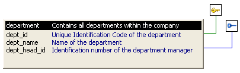

If your DBMS supports primary and foreign keys, you can work with the keys in PowerBuilder.
If your DBMS supports them, you should use primary and foreign keys to enforce the referential integrity of your database. That way you can rely on the DBMS to make sure that only valid values are entered for certain columns instead of having to write code to enforce valid values.
For example, say you have two tables called Department and Employee. The Department table contains the column Dept_Head_ID, which holds the ID of the department's manager. You want to make sure that only valid employee IDs are entered in this column. The only valid values for Dept_Head_ID in the Department table are values for Emp_ID in the Employee table.
To enforce this kind of relationship, you define a foreign key for Dept_Head_ID that points to the Employee table. With this key in place, the DBMS disallows any value for Dept_Head_ID that does not match an Emp_ID in the Employee table.
For more about primary and foreign keys, consult a book about relational database design or your DBMS documentation.
You can work with keys in the following ways:
For the most part, you work with keys the same way for each DBMS that supports keys, but there are some DBMS-specific issues. For complete information about using keys with your DBMS, see your DBMS documentation.
Keys can be viewed in several ways:
In the following picture, the Department table has two keys:

 If you cannot see the lines If the color of your window background makes it difficult
to see the lines for the keys and indexes, you can set the colors
for each component of the Database painter's graphical table
representation, including keys and indexes. For information, see "Modifying database preferences".
If you cannot see the lines If the color of your window background makes it difficult
to see the lines for the keys and indexes, you can set the colors
for each component of the Database painter's graphical table
representation, including keys and indexes. For information, see "Modifying database preferences".
When working with tables containing keys, you can easily open related tables.
 To open the table that a particular foreign key
references:
To open the table that a particular foreign key
references:
Display the foreign key pop-up menu.
Select Open Referenced Table.
 To open all tables referencing a particular primary
key:
To open all tables referencing a particular primary
key:
Display the primary key pop-up menu.
Select Open Dependent Table(s).
PowerBuilder opens and expands all tables in the database containing foreign keys that reference the selected primary key.
If your DBMS supports primary keys, you can define them in PowerBuilder.
 To create a primary key:
To create a primary key:
The Primary Key properties display in the Object Details view.
Select one or more columns for the primary key.
 Columns that are allowed in a primary key Only a column that does not allow null values can be included
as a column in a primary key definition. If you choose a column
that allows null values, you get a DBMS error
when you save the table. In DBMSs that allow rollback for Data Definition
Language (DDL), the table definition is rolled back. In DBMSs that
do not allow rollback for DDL, the Database painter is refreshed with
the current definition of the table.
Columns that are allowed in a primary key Only a column that does not allow null values can be included
as a column in a primary key definition. If you choose a column
that allows null values, you get a DBMS error
when you save the table. In DBMSs that allow rollback for Data Definition
Language (DDL), the table definition is rolled back. In DBMSs that
do not allow rollback for DDL, the Database painter is refreshed with
the current definition of the table.
Specify any information required by your DBMS.
 Naming a primary key Some DBMSs allow you to name a primary key and specify whether
it is clustered or not clustered. For these DBMSs, the Primary Key
property page has a way to specify these properties.
Naming a primary key Some DBMSs allow you to name a primary key and specify whether
it is clustered or not clustered. For these DBMSs, the Primary Key
property page has a way to specify these properties.
For DBMS-specific information, see your DBMS documentation.
Right-click on the Object Details view and select Save Changes from the pop-up menu.
Any changes you made in the view are immediately saved to the table definition.
 Completing the primary key Some DBMSs automatically create a unique index when you define
a primary key so that you can immediately begin to add data to the
table. Others require you to create a unique index separately to
support the primary key before populating the table with data.
Completing the primary key Some DBMSs automatically create a unique index when you define
a primary key so that you can immediately begin to add data to the
table. Others require you to create a unique index separately to
support the primary key before populating the table with data.
If your DBMS supports foreign keys, you can define them in PowerBuilder.
 To create a foreign key:
To create a foreign key:
The Foreign Key properties display in the Object Details view. Some of the information is DBMS-specific.
Name the foreign key in the Foreign Key Name box.
Select the columns for the foreign key.
On the Primary Key tab page, select the table and column containing the Primary key referenced by the foreign key you are defining.
 Key definitions must match exactly The definition of the foreign key columns must match the primary
key columns, including datatype, precision (width), and scale (decimal specification).
Key definitions must match exactly The definition of the foreign key columns must match the primary
key columns, including datatype, precision (width), and scale (decimal specification).
On the Rules tab page, specify any information required by your DBMS.
For example, you might need to specify a delete rule by selecting one of the rules listed for On Delete of Primary Table Row.
For DBMS-specific information, see your DBMS documentation.
Right-click on the Object Details view and select Save Changes from the pop-up menu.
Any changes you make in the view are immediately saved to the table definition.
You can modify a primary key in PowerBuilder.
 To modify a primary key:
To modify a primary key:
Select one or more columns for the primary key.
Right-click on the Object Details view and select Save Changes from the pop-up menu.
Any changes you make in the view are immediately saved to the table definition.
You can drop keys (remove them from the database) from within PowerBuilder.
 To drop a key:
To drop a key:
Highlight the key in the expanded tree view for the table in the Objects view or right-click the key icon for the table in the Object Layout view.
Select Drop Primary Key or Drop Foreign Key from the key's pop-up menu.
Click Yes.